1Wamp Electric Guitar Amplifier - Open Hardware
1Wamp is a one Watt small guitar amplifier based on a JFET guitar pre-amp, the Big Muff Pi tone control, and the LM386 power amplifier. This portable amp is an open hardware project designed by ElectroSmash using only free / open-source tools.
The preamp stage with two J201 transistors is designed to give a tube-like sound, the BMP tone stage is able to produce a big range of tones and the LM386 output stage can drive any kind of speaker, from headphones to a Marshall 2x12 cabinet.
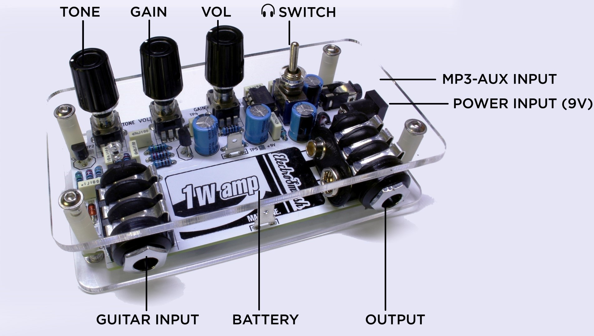
This project is perfect as a room practice amplifier loaded with all the features of the big amps:
- Tone/Volume/Gain controls.
- Speaker/Cabinet output.
- Headphones output with integrated attenuator switch.
- Aux/mp3 input.
- Battery Clip.
- 9V DC boss style power input jack.
1Wamp Schematic
The circuit can be broken down into 5 simpler blocks: JFET Input Stage, Tone Control, JFET Booster, LM386 Power Amplifier and Power Supply:
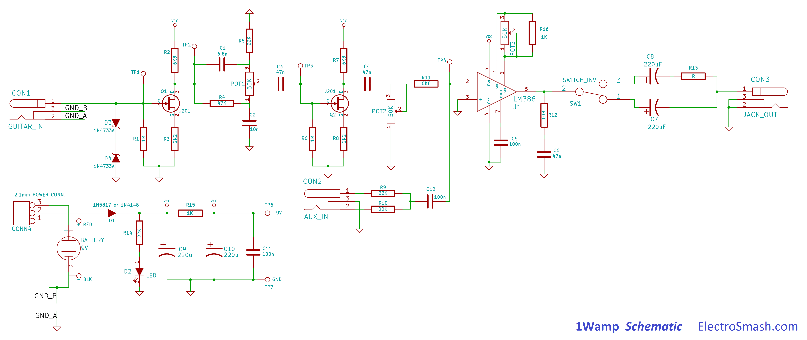
The functionality is simple: The input stage isolates the amp from the guitar, keeping the signal quality and avoiding tone sucking. Then the tone control shapes the frequency response adding more bass/treble to the mix. The JFET booster will recover the signal after the tone control and prepare it to the Power Amplifier stage that delivers up to 1W.
The aux/mp3 input adds any line level input signal to the guitar sound, allowing to practice with metronome/mp3/youtube backing tracks.
What is a pre-amplifier?:
A pre-amplifier is the part that precedes power amplifier (JFET Input Stage, Tone Control, and JFET Booster). It prepares the signal for further amplification or in other words, the pre-amplifier is just a circuit that does some preparing for the signal, usually coloring and integrating small gain stages with good impedance matching, tone controls, and filter elements. This part does not generate any power to drive a speaker.
What is a power amplifier?:
The LM386 power amplifier block will amplify and deliver the voltage and more important the current to drive the load (headphones/speaker).
The stage will define the wattage of the amp, and should just deliver power without adding any color to the signal.
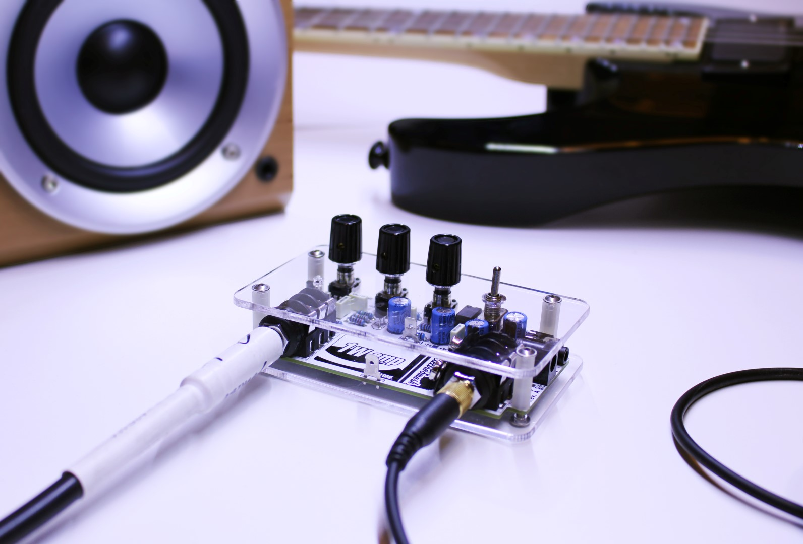
There are 2 options in the online shop:
- Order the Full Kit: This kit includes the PCB, Cover and all the components to build 1Wamp at home.
- Order only the PCB. It uses easy-to-find standard components and you can build the kit yourself.
If you have any question, contact us:
- There is a cool guide explaining How to build 1Wamp in 5 Steps
- All the Kicad native files, Schematic and Bill of Materials are free.
- In 1Wamp Forum you can check how to fit the PCB in an enclosure, use the light-plates, etc...
Power Supply Stage:
The power stage provides 9 volts to all the circuit stages, giving also protection against reverse polarity connections and additionally it filters the power line to remove any noise.
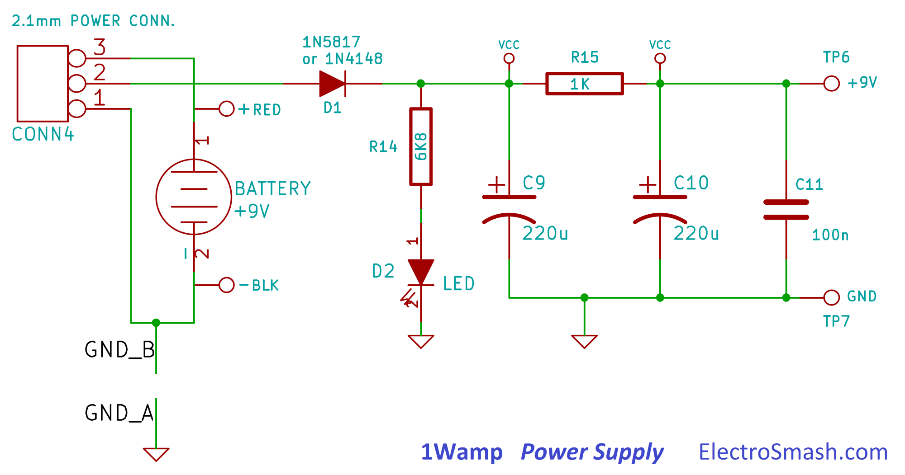
- The 2.1 jack connector CONN4 can take any boss type 9V adapter (negative polarity), it is a nice idea to use one because power amplifiers drain batteries pretty fast by definition. This connector will automatically disconnect the battery from the circuit when an external 9V wall adapter is plugged.
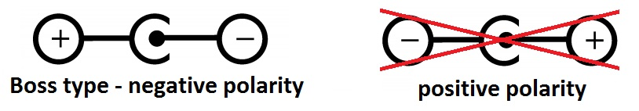
- The stereo guitar input jack is used as an on-off switch, connecting the battery (-) terminal to ground when the guitar jack is connected. When the mono input guitar jack is inserted, the points GND_B and GND_A are linked powering up the circuit.
- Diode D1 is a polarity protection diode, securing the amplifier against accidentally reversed power connections. In this case, the 1N5817 diode is used because it resists up to 20V in a reversed connection and it has a low VF=0.4V, so the final power supply will be 9 - 0.4= 8.6V giving more headroom for clean sounds. Any other general use diode like the 1N4148/1N4001 could be used as a substitute.
- The LED D2 will light when the circuit is ON (9V Battery or adapter + guitar connected). A high-efficiency diode is used to minimize the current used in this task.
- C9, R15, C10, and C11 are a low pass filter aimed to remove all the ripple and noise from the power line. The placement of the components in the circuit is critical:
- C9 is close to the LM386 to decouple it.
- R15 and C10 C11 form the most important part of the filter and it is located between the power-amp and the pre-amp.
- C11 is located close to the input stage to decouple it.
The cut-frequency of the filter is defined by R15 and C10 and C11 and can be calculated following the equation:
So, any humming noise over 0.7Hz will be removed by this filter.
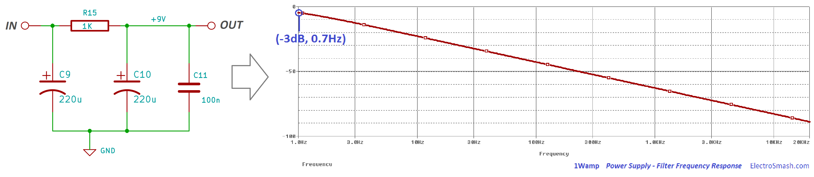
There is more info about this filter and how to remove hum from LM386 designs in the Layout Section.JFET Input Stage
The input stage is JFET pre-amplifier based on a Common Source Class-A amp with a high input impedance and medium output impedance. The JFET preamps became very popular in guitar circuits because they are simple, easy to build and able to deliver warmth tones.
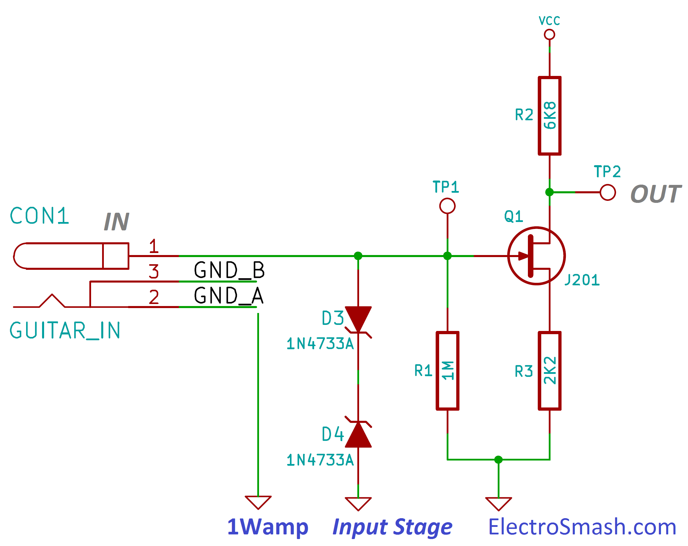
There are several famous guitar pedals that use this circuit topology:
- The Tillman Amplifier, it uses an R2=6.8K and R3=2.2K, famous for giving a tube-like sound with 6dB of gain and asymmetrical clipping.
- The Fetzer Valve is popular as a stand-alone booster and as a building block in larger circuits. It is based on a white paper by Dimitri Danyuk "Triode Emulator". It proposes the use of a carefully chosen source resistor on the JFET amplifier to mimic a vacuum tube sound. It uses R2= 10K and R3=1K, giving a high gain of 14 dB.
- Low gain JFET preamp: The Tillman and Fetzer valve introduce a big amount of gain and sometimes could make difficult to get clean tones. If you prefer natural clean sounds and light overdrive R2= 2.2K and R3=1K can also be used, giving soft tones and mellow saturation.
The whole 1Wamp circuit includes 2 of this JFET booster stages, so you can also combine these topologies as you like; Low Gain + Low Gain, Fezter + Low Gain, Tillman + Fetzer, etc...
- D3 and D4 are 5.1V 1-Watt zener diodes. They are surge protection against static discharges, they clamp the input signal if the levels exceed ±5.1V. They are optional but JFETs have a sensitive gate and they can blow just with a spark at the jack in a dry day. The 1N4733A part is used here due to its easy availability but any 5.1V 1W zener like the BZX85 5.1V could substitute it.
- R1 determines the input impedance and references the JFET gate to ground. The value of this component is not critic, anything from 100KΩ to 2MΩ will work, you can read more about this resistor in the 1Wamp Input Impedance section.
- R2 is the source resistor, it defines the ID bias current through the JFET and R3 is the drain load resistor. You can read how to calculate them in the next section.
How to Calculate RS and RD in a JFET Common Source Amplifier:
Intro - Background
The source resistor RS (R3 or R7 in 1Wamp) and the drain resistor RD (R2 or R8 in 1Wamp) define all the important parameters and sound of the pre-amp. There are plenty of ways to design and calculate the components for a JFET amp: graphical methods, mathematical, experimenting... sometimes misleading and confusing. Here we describe the simplest way (in my opinion) to design and calculate RG, RS, and RD for this particular amp called "Self Biased Common Source JFET Amplifier".
- RG: The Gate resistor, keeps the gate voltage at 0V, it also defines the input impedance and prevents signal loading.
- RS: The Source resistor, defines the bias point of the amplifier.
- RD: The Drain resistor, defines the gain of the amp.
Fixed values: A JFET transistor has 2 important fixed parameters:
- IDSS: Saturation Drain Current. It is the maximum current that flows through a JFET, which is when the gate voltage VG is 0V.
- VP or VGS(off): The pinch-off voltage, it is the voltage required to shut down a JFET.
These parameters are indicated in the datasheet with big tolerances. In the J201, for example, VGS(off) goes from -0.3 to -1.5V and IDSS could be anything from 0.2 to 1mA. Note that these values change from one transistor to another:
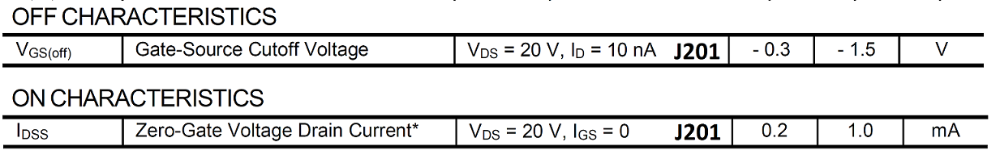
There is a JFET tester designed by RunoffGroove that can accurately measure the IDSS and VGS(off) in a JFET. From our experience, measuring one hundred reliable J201 JFETS we can average this values to:
- IDSS= 0.7 mA (average value).
- VGS(off)= -0.8 V (average value).
How to calculate RS and RD in 5 steps:
The Midpoint Bias method sets the transistor to the midpoint of its transfer curve, allowing maximum headroom (the drain current swings with a maximum span between IDSS and 0 without clipping):
- Calculate IDSS and VGS(off) from the datasheet, taking average values or using a JFET matcher.
- Calculate ID: as ID = IDSS/2 setting the midpoint bias.
- Calculate VGS: using the formula VGS= VGS(off)/3.4
note: sometimes this number is also approached to VGS= VGS(off)/4
4. RS = VGS/ID
VGS= VG - VS
VGS= (IG*RG) - (IS*RS)
With IG=0;
VGS= (0*RG) - (ID*RS) = IS*RD
5. RD = [VCC / (2*ID)] - (RS/2)
If we want VD to seat in the middle point of its maximum excursion we have to take VS into consideration.
- VDmin= VS = RS * ID
- VDmax= VCC
- VD|mid-point= (VDmin + VDmax) / 2
note: Sometimes in order to simplify maths, some designers take the midpoint bias point as VD=VCC/2. You can also use it, there is not a big difference in the end:
The gain of this mid-point biased JFET amp will be defined by the equation:
Where
These 5 steps can be summarized in the following image:
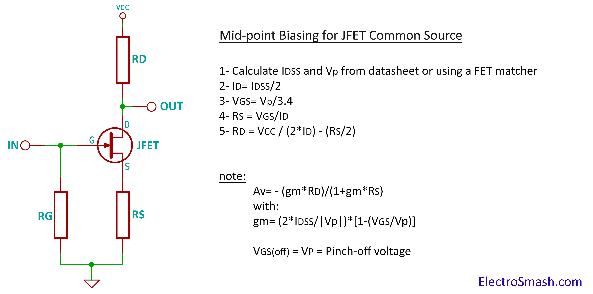
In this ideal mid-point biasing, the gain of the amp is limited by the values of RD and RS which in turn are limited by the intrinsic characteristics of the JFET (IDSS and VGS(off)), to trim the gain the value of RD can be reduced/increased. The midpoint is often traded for higher gain; changing the value of RD will modify the gain, but the clipping will be more prone to happen.
To finish this notes about the JFET biasing, it should be said that there is some mysticism biasing the JFET, the values of RD and RS can be tuned by ear for the best sound or following complex mathematical analysis trying to replicate the tube sound.
Some designers prefer not to follow the ideal mid-point biasing and make their designs with some variations, to see that we will study the Tillman, the Fetzer Valve and the Low Gain Fet:
J201 Tillman pre-amp:
- RG = 1MΩ
- RS = 2.2KΩ
- RD = 6.8KΩ
- Considering IDSS = 0.7mA and VGS(off) = VP = -0.8V and VCC=9V.
There is no simple formula to calculate ID and VGS. you will need to solve a system with 2 ecuations and 2 variables (ID and VGS):
ID= IDSS(1-VGS/VGS(off))^2
VGS=-ID*RS
Resolving we get the values:
First of all, we have a system with 2 equations and 2 variables:
Developing the square binomy
Grouping
Now the real values can be substitued: IDSS = 0.7mA and VGS(off) = VP = -0.8V
Resolving thie quadratic equacion (you can use any online calculator, or make the maths)
We get 2 possible solutions, ID= 0.73mA or 0.18mA. ID<IDSS so the first solution can be discarded.
ID= 0.18mA
VGS=-0.18*2.2=0.39V
VD= VCC-(ID*RD)=9-(0.18*6.8)
AV= - ((gm*RD)/(1+gm*RS))
with:
AV= -((0.8*6.8)/(1+0.8*2.2)) = -5.3/2.7= 1.9 times or 5.8dB
- ID= 0.18mA
- VGS=-0.37V
- VD=7.8V
- AV=5.9dB
These results show that in the Tillman amp, the drain current ID is below IDSS/2 (0.3mA) and also VD is displaced (4.5V). These will make the amp to have a low amout of gain and the clipping will happen easier in the positive semicycle of the signal. The designer was not looking for a high-gain design and due to the popular acceptance of this circuit seems that it also sounds good.
J201 Fetzer Valve
- RG = 1MΩ
- RS = 1KΩ
- RD = 10KΩ
- Considering IDSS = 0.7mA, VGS(off) = VP = -0.8V and VCC=9V.
Summarizing the fetzer valve, Runoffgroove uses 2 equiations derived from Danyuk Triode Emulator paper to calculate RS and RD:
Rs = 0.83 * |Vp| / Idss = 0.83 * 0.8 / 0.7 = 0.9KΩ approx. to 1KΩ
Rd = 0.9 * (Vcc - 2*|Vp|) / Idss = 0.9 *(9 - 2*0.8) / 0.7 = 9.5KΩ approx to 10KΩ
Using a similar approach that in the Tillman amp we can calculate the bias points:
- ID= 0.27mA
- VGS=-0.27V
- VD=6.3V
- AV=14dB.
In the Fetzer amp, the value of ID is very close the IDss/2, allowing a nice big span of this current. The value of RD also makes VD close to its ideal value. In this point, the transistor has a big amount of gain and seems that replicates the behavior of a vacuum tube.
J201 Low Gain Fet:
- RG = 1MΩ
- RS = 1KΩ
- RD = 2.2KΩ
- Considering IDSS = 0.7mA and VGS(off) = VP = -0.8V
Following once again the maths of the Tillman amp ID and VGS can be calculated:
- ID=0.27
- VGS=0.27
- VD=8.4V
- AV=1=0dB.
The current in the Low Gain JFET amp is designed to be ideal (IDSS/2), and the VD point is intentionally shifted from the midpoint biasing, it will make the signal to clip in the positive semi-cycle easily. The LM386 does not need a high-level input so placing this amp/buffer before it, improves the sound quality.
Amplifier Input Impedance:
These JFETs have the advantage over bipolar transistors of having an extremely high input impedance along with a low noise output making them ideal for use in amplifier circuits that have very small input signals.
The JFET input impedance can be considered infinite and only the value of the gate resistor (R1) will define the total value of it
ZIN= ∞ // R1 = R1 = 1MΩ
The rule of thumb is to interface the guitar to an input impedance that is at least 1MΩ, it will keep the signal uncorrupted as foundations for the next stages avoiding tone sucking.
Tone Control
The passive tone control is Big Muff Pi style, following a classic simple and effective design that generates a great variety of tones.
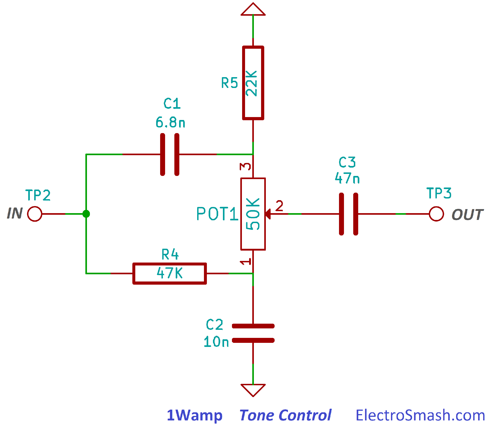
This topology is a combination of a high pass filter (C1R5) and a low pass filter (R4C2) that are mixed together by a linear potentiometer POT1. The cut-off frequencies of both filters are designed so that their interweaving effect introduces a middle-frequency scoop/notch at 800Hz (see the graph below) when the potentiometer is set to middle.
- High-Pass filter cut frequency \[f_{c}=\frac{1}{2\pi R C}=\frac{1}{2\pi \cdot R_{5}\cdot (C_{1})}=\frac{1}{2\pi \cdot 22K \cdot 6.8nF}=1064Hz\]
- Low-Pass filter cut frequency \[f_{c}=\frac{1}{2\pi R C}=\frac{1}{2\pi \cdot R_{4}\cdot (C_{2})}=\frac{1}{2\pi \cdot 47K \cdot 10nF}=338Hz\]
1Wamp Tone Control Frequency Response:
Find below the frequency response, showing from blue to red all values of the tone potentiometer:
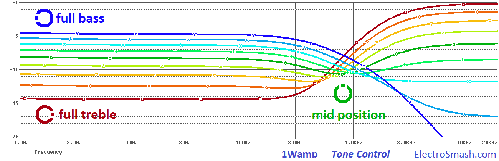
The green response line has the tone pot set at mid point showing the 800Hz scoop. There is an overall 7dB loss and at the notch the loss is about -10dB in total at 800Hz. The blue and red colour curves have the tone at full bass/treble respectively.
There are some tips using BMP based tone controls:
- To play clean sounds, the best is to use the pot more to the side of the treble, it will attenuate overloading bass signals and the resulting sound will be more sparkly and clean.
- To play rock/hard/metal any position is good, the distortion will be more metal-heavy on the bass side and more punk-fast on the treble.
JFET Booster Stage.
This second JFET stage is identical to the first one, it is designed primarily to recover the volume loss of -7dB during the passive tone stack and to introduce more harmonic content to boost the tube sound.
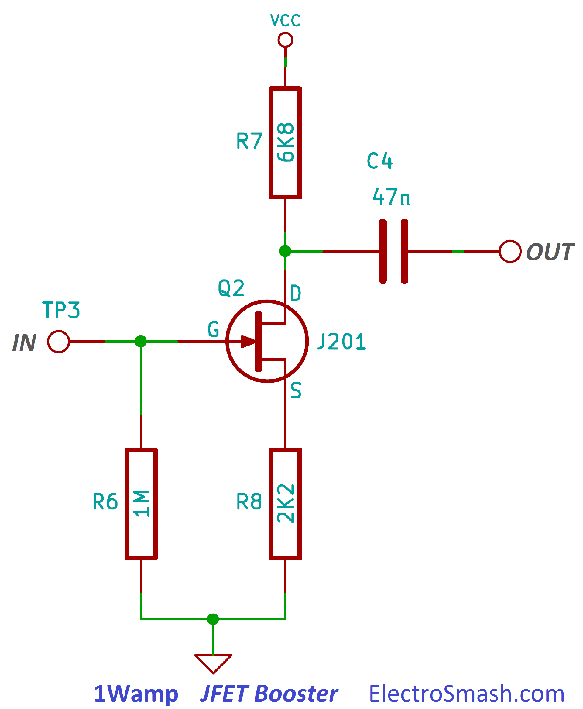
R6, R7, and R8 are the gate, source and drain resistors. Their functionality is exactly the same as the R1, R2 and R3 resistors in the Input Stage. If you want to learn more about these resistors and how to calculate them check the Input Stage section.
LM386 Aux/mp3 input
This auxiliary input mixes the guitar signal with an additional line-level input from a laptop/mp3/music player just before the power amplifier. Doing this it is easy to practice with backing tracks, metronomes or drum bases.
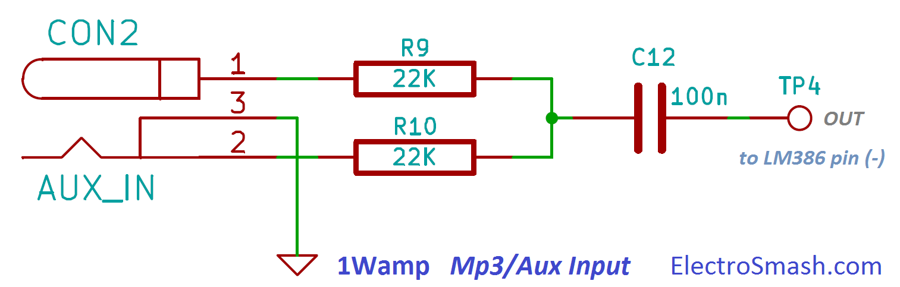
R9 and R10 resistors in series with the aux input prevent signal mixing problems while adjusting for differences in input strength between the line in and pre-amplified guitar signal. Any value between 10KΩ and 33KΩ will work without problems.
- C12 is a 100nF capacitor, placed to reduce any hum or interference that the input mini jack can catch if nothing is connected to it.
An Aux/MP3 player is a low-impedance source. Placing a buffer in this input would be perfect (adding circuit complexity), but you may be able to work without them.
The LM386 has a 50K input impedance, so using summing resistor of any more than 50k is not ideal as the input voltage would be cut in half when using a 50k resistor (neglecting the booster stage impedance).
The volume of the aux input is adjusted from the external device, for circuit simplicity, there are not pot to reduce the input level. Note also that the mp3/aux input is directly fed into the LM386 and using high distortion levels the aux input might suffer some distortion. This is the little price to pay for having a simple and practical direct input.
Additionally, this input can also be used to connect a second guitar or a bass guitar with a jack to mini-jack adapter.
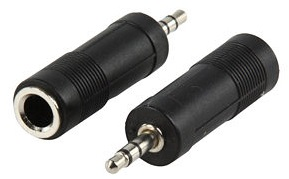
LM386 Power Amplifier Stage.
The main power amplifier stage is based on the LM386 audio integrated amplifier. It is a popular choice for low powered guitar amplifiers due to its low quiescent current and ability to run on 9V. It has been used in a lot of popular amps like the Smokey Amp, the Little Gem, the Ruby Amp, the Marshall MS-2 and the Noisy Cricket.
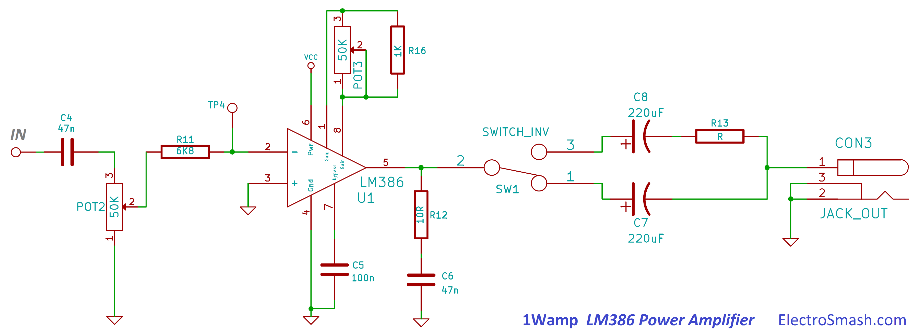
- C4 is a 47nF input capacitor, it prevents any DC voltage being presented to the amplifier's input. It also affects the circuit's bass response, changing this value to a higher capacitance (100nF) will make it more bassy but also more muddy, values from 22 to 47nF sound great.
- The POT2 functionality is explained in the Volume Potentiometer section.
- R11 resistor is placed for the mp3/aux input which is connected to the same point as the TP4 (Test Point 4). If the POT2 is maxed down, the input of the LM386 will be grounded and the aux/mp3 signal won't be amplified. Connecting this series resistor a minimum load is always guaranteed for the auxiliary input.
- The POT3 and R16 functionality are described in the Gain Potentiometer section.
- The C5 capacitor from pin 7 to ground avoids the power supply noise to be amplified and reach the output. In this way, the high-gain input stage of the chip is isolated from the supply noise hum, transients, etc.
- R12 and C6 form the Zobel Network, its function is to make the power stage more stable removing oscillation, the values used, 10Ω and 47nF are standard because this network is aimed to compensate the load (speaker or headphones), not the amplifier, and the load is normally generic in audio amplifiers. The resistor is chosen to equal the nominal resistance (32Ω, 8Ω, 4Ω, etc.)
- The capacitor is calculated using C= Le/R2, where Le= inductance of speaker's coil.
- The physical location of this components is critical, they should be placed as close as possible to the chip, in some occasions Zobels mounted careless around the PCB cause oscillation. With the LM386, the best values are a 10 and a 47nF, they give the smoother distortion, raising the values of the R or the C will make the distortion more crispy and rough.
- R13 will reduce the volume for the headphones, any value between 300Ω and 1KΩ will work, the higher the value the lower the volume at the headphones. This output attenuator formed by the SW1, C7, C8, and R13 is detailed in the LM386 Output Attenuator section.
Volume Potentiometer.
The POT2 Volume potentiometer limits the amount of signal into the LM386. As the Volume is increased, you will start getting nice breakup.
Gain Potentiometer.
Why POT3 and R16 are mounted in parallel?
The range of values of PCB mounted potentiometers on the market is limited, finding 1KΩ pots with the correct footprint and shaft length could be difficult. Placing 50K potentiometer (easy to find) and 1KΩ simple resistor in parallel will create a 1KΩ potentiometer:
- With the POT3 at max (50K): 50KΩ//1KΩ= (50Kx1K)(50K+1K)= 0.98KΩ = 1KΩ approx
- With the POT3 at min (0K): 50KΩ//1KΩ= ( 0Kx1K)( 0K+1K)= 0
The resulting potentiometer will be logarithmic instead of linear, but with a high gain amp like this, it is not bad to have a more sensitive pot in the first half of the potentiometer. However, if you are able to find a 1K potentiometer you can place it instead of the parallel combination.
LM386 Voltage Gain Calculation
The potentiometer (1K as explained above) placed between pins 1 and 8 to adjust the gain from 41 (28dB) to 200 (46db) following the general LM386 voltage gain formula taken from the datasheet:
Where Z1-5 and Z1-8 are the impedances between the respective pins. Note that Z1-5 internal resistance is 15KΩ and Z1-8 is 1.35KΩ.
If you want to read more about how to calculate the voltage gain, you can read the Voltage Gain Calculation in the Ruby Amp.
LM386 Output Attenuator.
The output power of the LM386 is too high for a pair of headphones. An average pair of headphones only need 1mW (into 32Ω) for a reasonable good volume. Depending on the LM386 model, it is able to deliver up to 1000mW (1W), so in order to reduce this output power below the threshold of pain, a series resistor is placed. This auxiliary load will take part of the power giving to the headphones the right amount of it.
Frequency response of the output attenuator:
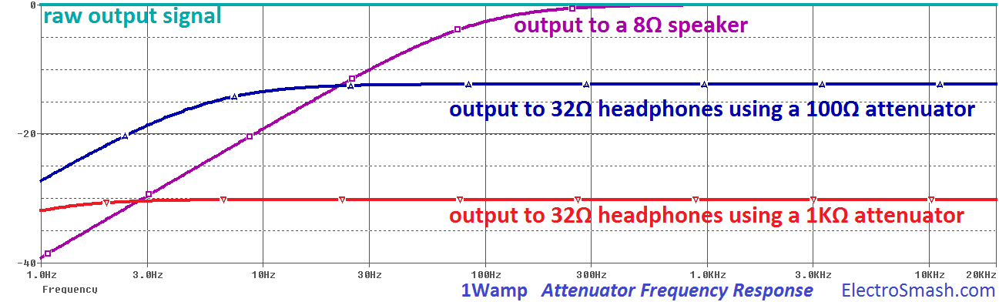
Placing an output attenuator will modify the frequency response, reducing the amount of bass into the headphones.
- Without attenuator (purple plot above): There is a low pass filter formed by C7 (220uF) and the speaker load (let's consider it as 8Ω driver), the cut-frequency is 90Hz (calculated as fc=1/(2πRC)), harmonics below 90HZ will be attenuated. Guitar signals do not have much content at that frequencies and also rolling off the bass helps small speakers from farting out. In fact, if you have a small speaker and it farts you should reduce this cap to something like 47-100uF (rolling the bass around 400Hz).
- With attenuator (blue and red plots above): The extra resistor in series and the load (32Ω headphones ) will roll off the bass below the audible frequencies. For this series resistor, any value between 300Ω and 1KΩ will reduce the volume to an acceptable level to most headphones. Some people use just a 10Ω resistor but from my experience, the volume is still too high.
LM386 Clipping - Overdrive - Distortion:
Two types of clipping/distortion and a combination of them can be archived with an LM386 power amplifier:
- Clipping at the output of the LM386 by reaching the limits of the output voltage swing: In this circuit, the LM386 has always minimum gain of 41 (32dB), the output will clip if the signal reaches 8Vpeak-to-peak using a 9V power supply.
The maximum input voltage that will make the output clip is 8Vpp/41=195mVpp, any voltage over this level will clip the output creating distortion tones. The Volume potentiometer (POT3) is placed to attenuate the incoming signal below this 195mVpp (clean tones) or over it (crunch-distortion).
- Clipping at the input of the LM386 by the overload of the IC input limits: The LM386 has an input voltage limits of ±0.4V (listed in the datasheet). If the input signal goes even higher over ±0.4V the input stages of the LM386 will saturate creating even more distorted sounds.
1Wamp Layout.
The design and layout of the power supply in audio circuits with a pre-amp and power-amplifier stages is critical. If the power from the battery/adapter jack is given to the circuit following a wrong path, the noise of the power-amp could be added to the pre-amp stage, resulting in a positive feedback and creating noise or oscillation commonly called motor-boating. To avoid this, the power should be connected following this block diagram:
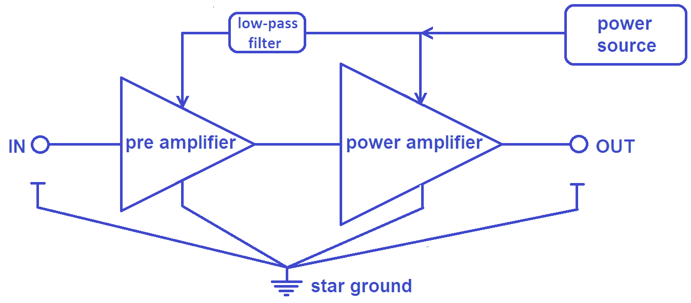
Rules to minimize noise in audio circuits:
- Place a CRC network (low-pass filter) between the power-amp and the pre-amp. This is something that has been there for decades, if you check any old Marshall/Fender valve amplifier schematic you will spot a CRC between the power valves and the pre-amplifier (usually a 10K resistor and a cap of tens to hundreds of farads)
- Place filter capacitors close to the part to be decoupled.
- Keep power and GND traces away from noise sources or critical components.
- Route the power and GND traces as thick as possible.
Star grounding: Ground is the common reference potential, commonly determined to be zero volts. This ground is the shared return path from the power supply to all the stages of the circuit.
- Connecting the blocks of the circuit to ground in series will work, but a small voltage drop will be created in the ground signal due to the high currents and the (small) resistance of the ground track. The input stage is very sensitive to common noise introduced through the ground line, this noise could be added to the input signal and in the worst case create oscillation/positive feedback.
- Connecting the blocks of the circuit in parallel finishing in a single point (star) the ground variances and interferences between parts is minimized.
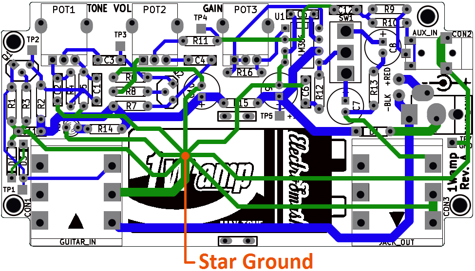
In the above image the center of the star ground is indicated, from this all the green ground tracks for the different subsystems (input jack, led, input stage, tone control, booster, power amp, output jack). These tracks flow in parallel and with similar lengths minimizing common noise.
1Wamp Bias Points and Signals:
The most important DC bias points of the 1Wamp are shown. It can be useful for troubleshooting:
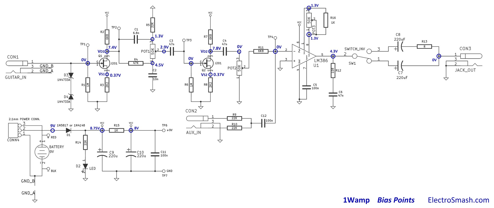
note: Your values should be all shifted a bit up or down, depending on your power supply levels. For this graph, Vcc is ideal and equal to 9V.
- To get this voltage values, the POT1 (Tone) is in mid position, POT2 (Vol) is at maximum value and POT3 (Gain) is at the minimum value.
- VD1 voltage is slightly lower than the calculated in the Tillman pre-amp section (7.8 VS 7.4). This is due to the loading of the tone control.
1Wamp Signals:
Using an oscilloscope the most important points of the amplifier are measured: input signal (TP1), after the first JFET stage (TP2), after the tone control (TP3), after the second JFET stage - input of LM386 (TP4) and output signal.
These waveforms were taken using different JFET topologies: with 2 Tillman JFETS, with 2 Fetzer Valves, and with 2 Low Gain JFETs:
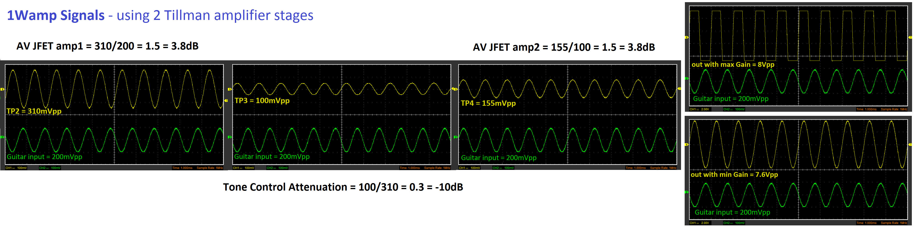
- The signals above shows the amplification and waveforms at all the test points (TP) of the circuit using a Tillman topology in both transistor amplifiers.
- The input stage has a gain of 4dB approx, slightly reduced from the calculated in the Input Stage section due to the loading of the Tone Stage and the real parameters of the JFET.
- The Tone Control reduces the amplitude of the signal -10dB at 1KHz as expected and the last amplifier stage gives again 4dB of Gain.
- The last two graphs show the output of the amplifier when the gain is set to its minimum and maximum value. This output signal goes from clean to clipping giving a nice range of action and sounds.
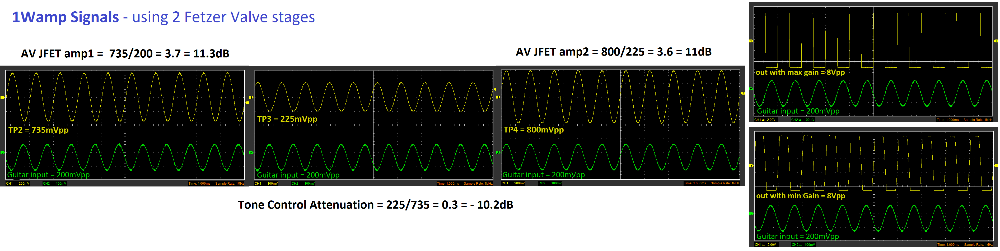
- The images above show the signal of the circuit using the Fetzer Valve topology in both transistor amplifiers. In general, this circuits gives more gain than the Tillman, resulting in a higher and more clipped output signal.
- The input stage has a gain of 11dB approx, slightly reduced from the calculated in the Input Stage section due to the loading of the Tone Stage and the real parameters of the JFET.
- The Tone Control reduces the amplitude of the signal -10dB at 1KHz as expected and the last amplifier stage gives again 11dB of Gain.
- The last two graphs show the output of the amplifier when the gain is set to its minimum and maximum value. This output signal goes from clipped to supper-clipped being perfect for overdriven tones and hard rock sounds.
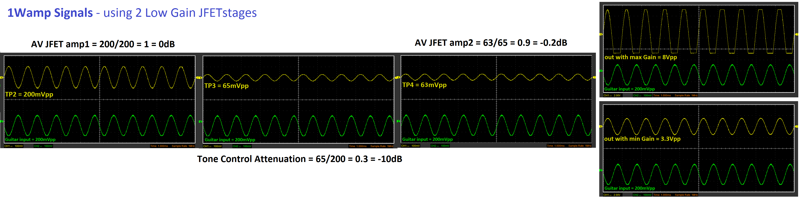
- The images above show the signal of the circuit using the JFET Low Gain topology in both transistor amplifiers. In general, these circuits give less gain than the Tillman, resulting in a range of clean and light asymmetric overdriven tones.
- The input stage has a gain of 0dB, the Tone Control reduces the amplitude of the signal -10dB at 1KHz as expected and the last amplifier stage gives again 0dB of Gain.
It might seem that the guitar signal at the input of the LM386 is too low (63mVpp) but it's not a problem, the LM386 does not require high-level waveforms at its input, in fact, signals over 195mVpp will be clipped as seen in the Clipping Section.
The last two graphs show the output of the amplifier when the gain is set to its minimum and maximum value. The output signal goes from clean to light asymmetric overdrive.
note:
- For all the images, the input signal is a 1KHz sinusoid with 200VPP, comparable with an average guitar signal.
- The POT1 (Tone) is set to mid, the POT2 (VOL) gain to max and the POT3 (Gain) varies from min to max in the last 2 images.
1WAmp Bill of Materials / Part List:
The components for the 1Wamp are easy-to-find through-hole parts with the minimum number of references. There is plenty of alternatives and replacement parts although the J201 JFET is a bit tricky.
Find below the complete bill of materials, with mouser/farnell references and alternatives:
| 1Wamp Bill of Materials | |||||
| Reference | Qty | Value | Description | Mouser | Farnell |
| Capacitors | |||||
| C1 | 1 | 6.8n | CAP, FILM, PET, 6.8NF, 100V, RAD | R82EC1680Z350J | |
| C2 | 1 | 10n | CAP, FILM, PET, 0.01UF, 100V, RAD | R82EC2100DQ50J | |
| C3,C4,C6 | 3 | 47n | CAP, FILM, PET, 0.047UF, 100V, RAD | R82EC2470DQ60J | |
| C5,C11,C12 | 3 | 100n | CAP, FILM, PET, 0.1UF, 100V, RAD | R82EC3100DQ70J | |
| C7,C8,C9,C10 | 4 | 220uF | Aluminum Electrolytic Capacitor 16V | REA221M1CBK-0811P | |
| Resistors | |||||
| R12 | 1 | 10R | TH Metal Film, 10R, 1/4W, ±1% | MF25 10R | |
| R13,R15,R16 | 3 | 1K | TH Metal Film, 1K, 1/4W, ±1% | MF25 1K | |
| R3,R8 | 2 | 2K2 | TH Metal Film, 2.2K, 1/4W, ±1% | MF25 2K2 | |
| R2,R7,R11 | 3 | 6K8 | TH Metal Film, 6.8K, 1/4W, ±1% | MF25 6K8 | |
| R5,R9,R10,R14 | 4 | 22K | TH Metal Film, 22K, 1/4W, ±1% | MF25 22K | |
| R4 | 1 | 47K | TH Metal Film, 47k, 1/4W, ±1% | MF25 47K | |
| R1,R6 | 2 | 1M | TH Metal Film, 1M, 1/4W, ±1% | MF25 1M | |
| Pot1,Pot2,Pot3 | 3 | 50K | Potentiometers 9MM 50K V/ADJ | RK09D113000D | |
| Connectors | |||||
| CON1, CON3 | 2 | 6.35 jack | Neutrix 1/4 ST Chrome Conn PCB |
NMJ6HCD2 | |
| CON2 | 1 | 3.5 jack | Jack 3.5 mm st - CLIFF 4 POLE, PCB |
FC68125 | |
| CONN4 | 1 | 2.1 jack | DC Power Conn 2.0mm PCB Jack | KLDX-0202-AP-LT | MJ-179PH |
| Others | |||||
| D1 | 1 | 1N5817 | Schottky Diodes Vr/20V Io/1A | 1N5817 | |
| D2 | 1 | LED | Standard LED - TH 3MM LED WHITE | VLHW4100 | |
| D3,D4 | 2 | 1N4733A | Zene Diode 5.1V 1W ZENER | 1N4733A | |
| 8pin dip socket | 1 | 8Pin socket | IC Sockets 8P DUAL | 4808-3000-CP | |
| Q1,Q2 | 2 | J201 | |||
| Plastic Knobs | 3 | 6.35mm knob | Knob 6.35 mm shaft size. | 450-2023-GRX | |
| SW1 | 1 | toggle switch | Toggle 3-Pin SPDT ON-ON | 612-100-A1111 | |
| 9V Battery Conn. | 1 | Battery Clip | 9V Battery Contacts 26AWG | 121-0526/I-GR | |
| U1 | 1 | LM386 | Audio Amplifier | LM386N-4/NOPB | |
| Mechanical | |||||
| PCB | 1 | 1Wamp PCB | |||
| Plexiglas Cover | 2 | - | |||
| Nylon Spacer | 4 | m3x16 | Spacers M3 x 16mm nylon | R30-1611600 | |
| M3x12 screws | 8 | - | M310-PRSTMCZ100 | ||
| Batt. optional clips | 2 | - | 4.8X0.5MM | TAB38250568 | |
| * Additional Comp. | |||||
| R2, R7 | 2 | 10K | TH Metal Film 10K, 250 mW, ± 1% | MF25 10K | |
| R3, R8 | 2 | 1K | TH Metal Film, 1K 250 mW, ± 1% | MF25 1K |
*Additional components: The additional 2x10K and 2x1K will allow you to configure the JFET Stages as you like so you can choose between the J201 Tillman pre-amp (default), the J201 Fetzer Valve or the J201 Low Gain Fet. The difference between them is the amount of gain that they introduce (5.9dB, 14dB, and 0dB respectively). You can find more info in the JFET Input Stage section.
Capacitors: Electrolitics, Film, Ceramics ...?
For big values (>1uF) use aluminum electrolytic, for medium size (1nF - 1uF) use Film and for small values (<1nF) use ceramics. If you are not sure about using ceramics or film somewhere go for film; film capacitors are generally preferred over ceramics in audio path applications. There is a great article about capacitors for audio by BeavisAudio.
References:
Fetzer Valve Amplifier by RunoffGroove.
Tillman Amplifier by Donald Tillman.
Teemuk Kyttala Solid State Guitar Amplifiers, the Holy Scripture.
JFET Basics by Kenneth A. Kuhn
Common Source JFET Amplifier by Electronic Tutorials.
JFET Preamplifier Circuits by Mike Martell.
Smokey Amplifier by ElectroSmash.
Ruby Amplifier by ElectroSmash.
Spice model for the J201 JFET Transistor:
* J201 with VGSoff=-0.8V and IDSS=0.6mA
.MODEL J201 NJF (VTO=-0.8 BETA=0.9375M LAMBDA=2M IS=114.5F RD=1 RS=1
+ CGD=4.667P CGS=2.992P M=.2271 PB=.5 FC=.5 VTOTC=-2.5M BETATCE=-.5
+ KF=604.2E-18)
If you want a JFET with a certain value of VGSoff and IDSS, just change the model so:
VTO = VGSoff
BETA = IDSS / (VGSoff^2)
All credits to stm in diystompboxes.com
Spice model for the 2N5457 JFET Transistor:
* 2N5457 with VGSoff=-1.6V and IDSS=3.3mA
.MODEL 2N5457 NJF (VTO=-1.6 BETA=1.29M LAMBDA=2M RD=1 RS=1 CGD=6E-12
+ CGS=2.25E-12 KF=6.5E-17 AF=0.5)
Spice model for the MPF102 JFET Transistor:
* MPF102 with VGSoff=-2.5V and IDSS=6mA
.MODEL MPF102 NJF (VTO=-2.5 BETA=0.96M LAMBDA=5M RD=1 RS=1 CGD=1.54248P
+ CGS=2.567P PB=1.49 KF=7.90591F AF=499.953M)
Thanks for reading, all feedback is appreciated
Some Rights Reserved, you are free to copy, share, remix and use all material.
Trademarks, brand names and logos are the property of their respective owners.